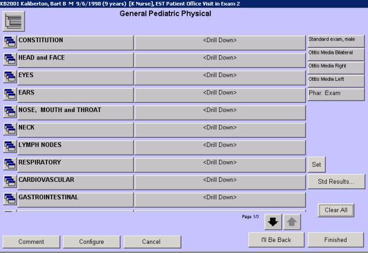

|
Description
This screen is used to document the physical examination for the encounter. Most physicals are configured as drilldown screens.
If any Standard Exams have been set up, bars will appear on the right side of the screen. Providers can document quickly using a standard exam or the Prev Exam option, then drill down to make any changes needed.
An option at the bottom of the screen worth noting is the Review Physicals buttons. Using the Review Physicals screen in conjunction with the Prev Exam button allows the user to review each of the past examinations and determine the most appropriate one for today's encounter. Then select the Prev Exam button and select the examination desired.
How to Access This Screen
Access this screen by:
- Selecting the small icon to the left of Physical Examination from the Patient Chart screen
- Selecting the description for Physical Examination from the Patient Chart screen, then selecting the description again from the dashboard screen.
- Selecting the Physical button on the right side of the Patient Chart screen
Screen Example

Want to Learn More?
Related Solutions
Screen: Standard Exam
How to: Document the Physical Examination
How to: Create a Standard Exam
How to: Modify an Existing Standard Exam
|